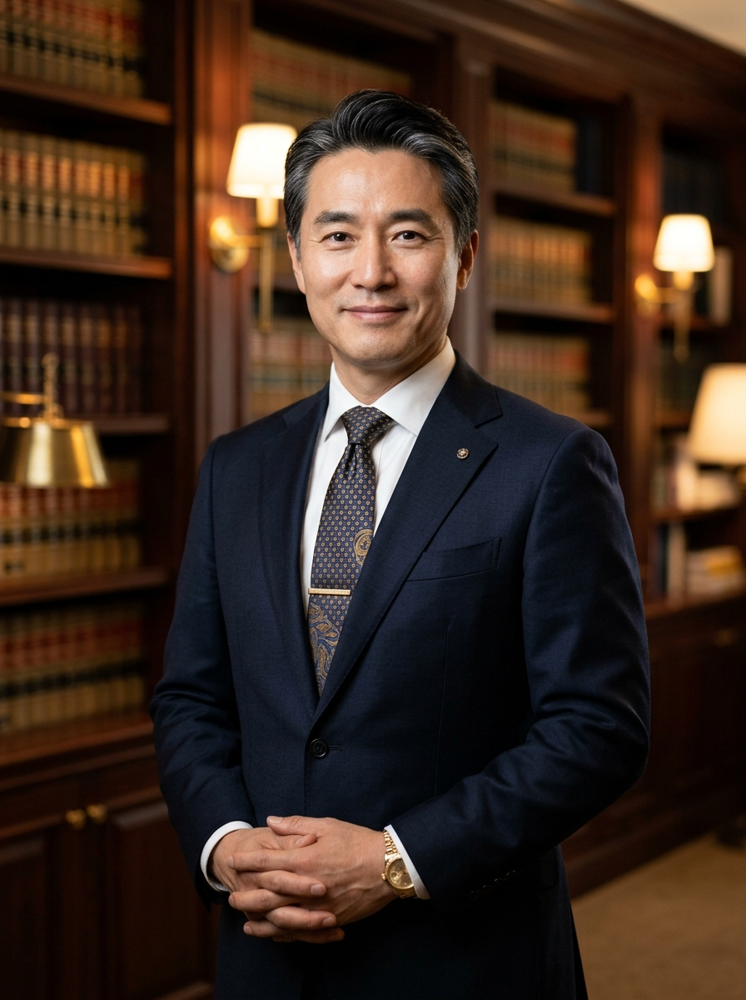

대검찰청 중수부 및 서울고법 판사 출신 직접 서면 작성
승소의 확신,
의뢰인의 내일을 지키는 법률 전략
복잡하고 막막한 분쟁일수록 초기 48시간의 골든타임이 결과를 좌우합니다.
수천 건의 소송 경험과 판례 빅데이터로 의뢰인에게 가장 유리한 결과를 만듭니다.
주말·공휴일 24시간 긴급 연결
02-588-1234
94.2%
민·형사 승소/합의율
3,420건
누적 사건 해결 실적
28년
서초동 본사 업력

대표변호사
김정율 변호사
사법연수원 28기 | 전 서울고등법원 판사
서울대학교 법과대학 법학과 졸업
전 서울중앙지방법원 형사합의부 판사
대한변호사협회 등록 [형사법·기업법무] 공인 전문
RECENT MAJOR CASE
대기업 계열사 배임 혐의 (소송가액 120억 원) 전부 무죄 판결 이끌어냄 (2025.11 확정)